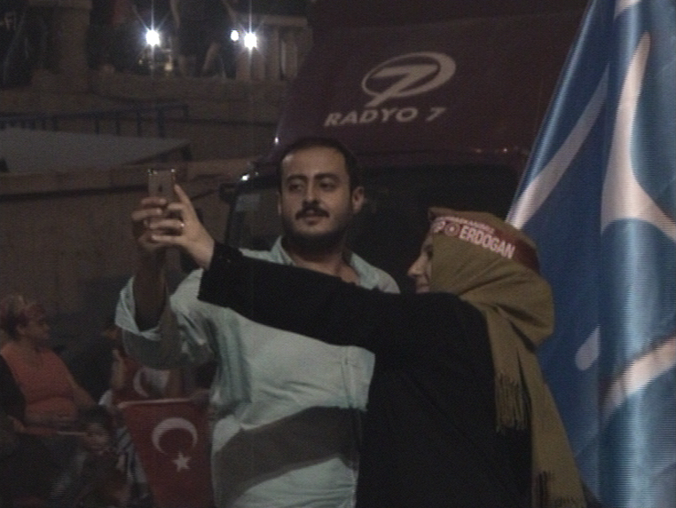
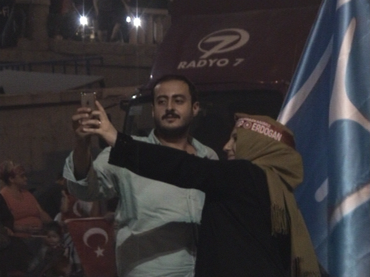
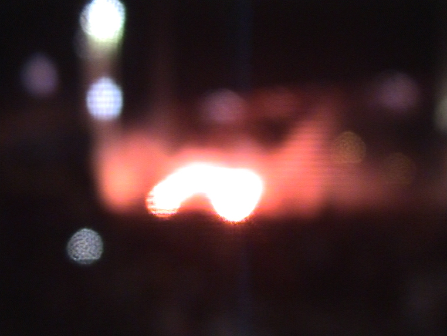
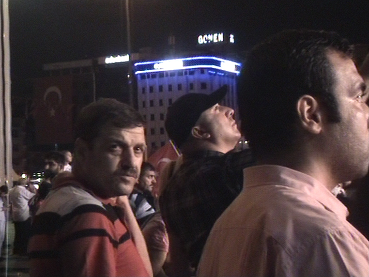
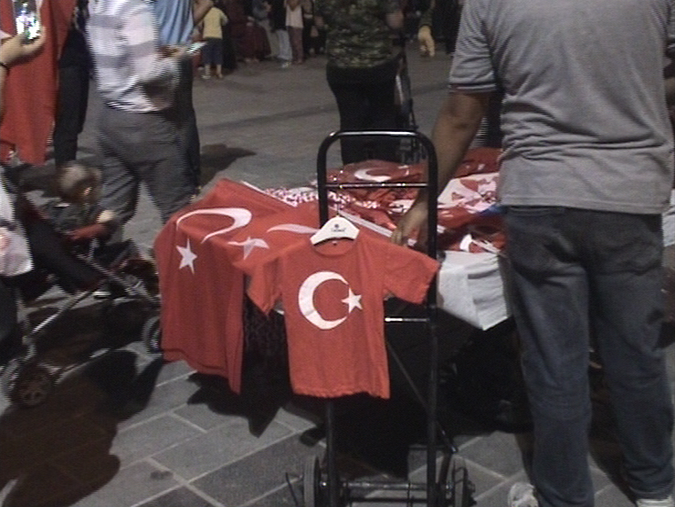
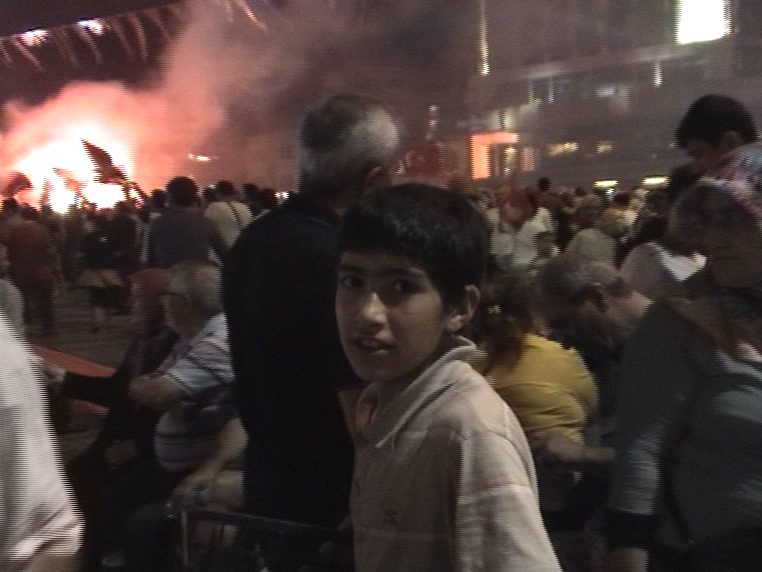
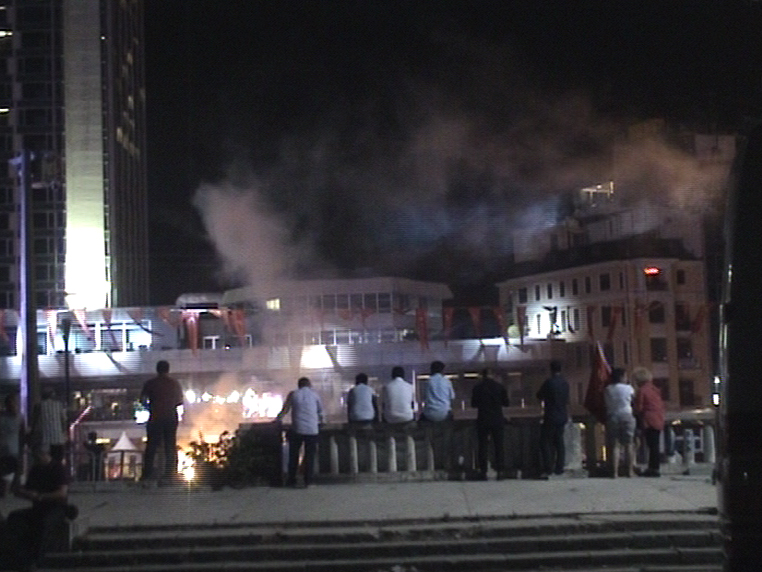
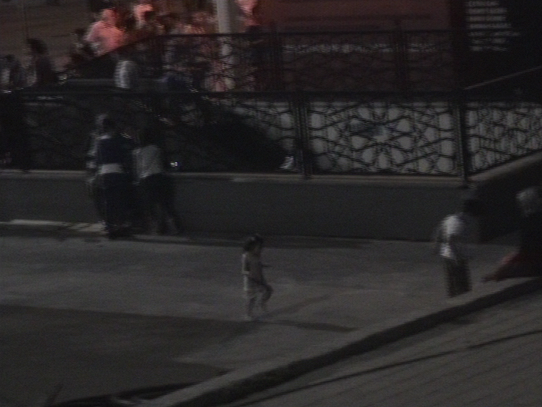
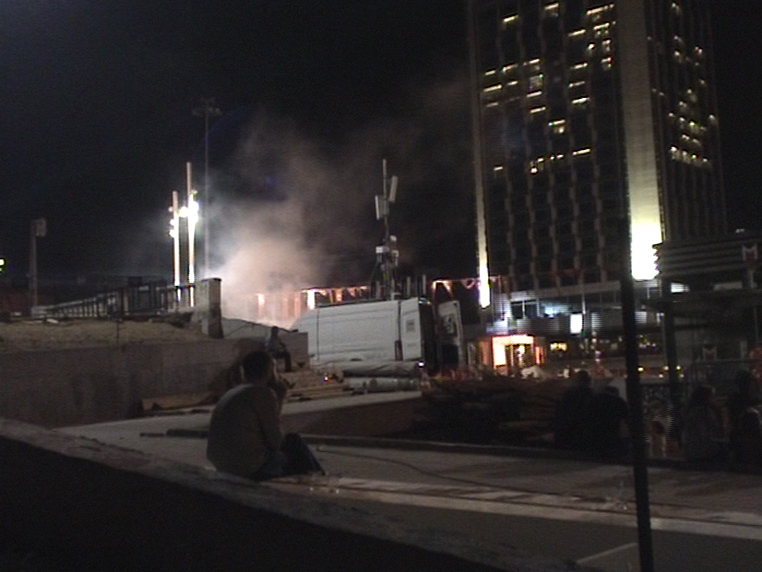
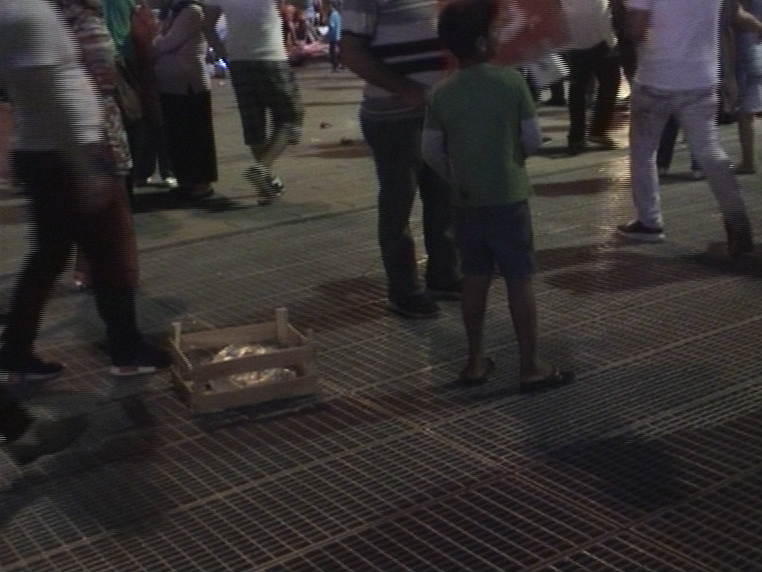
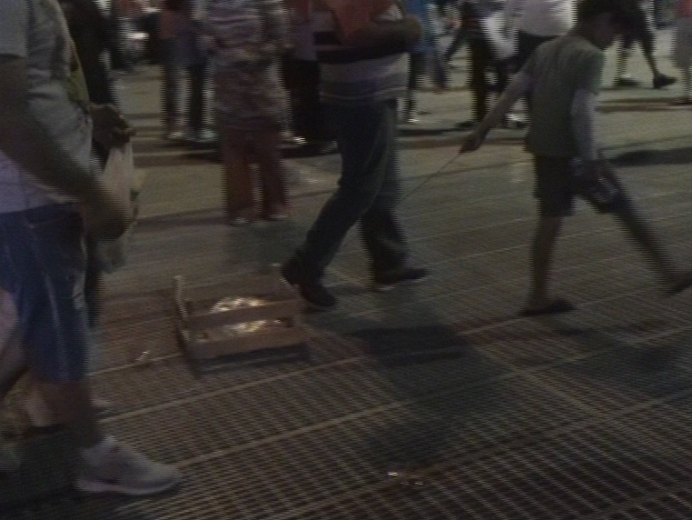
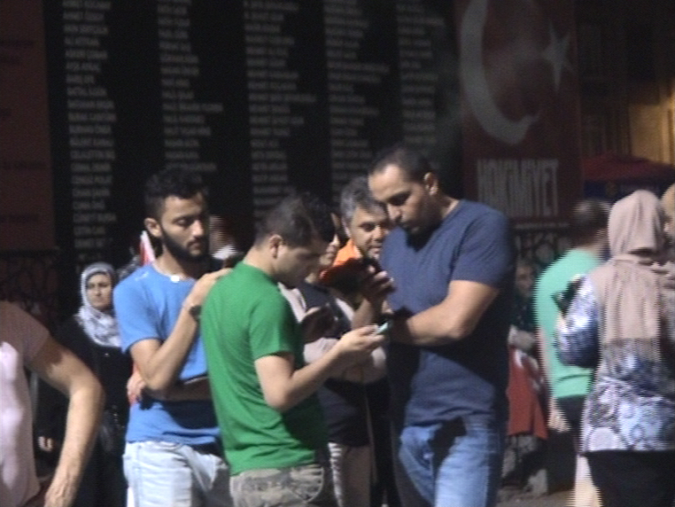
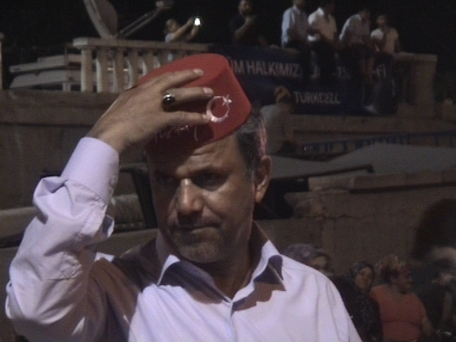
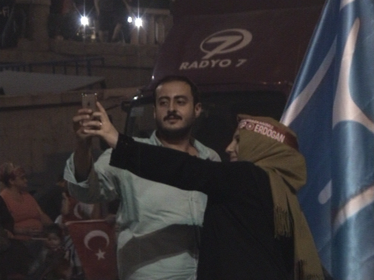
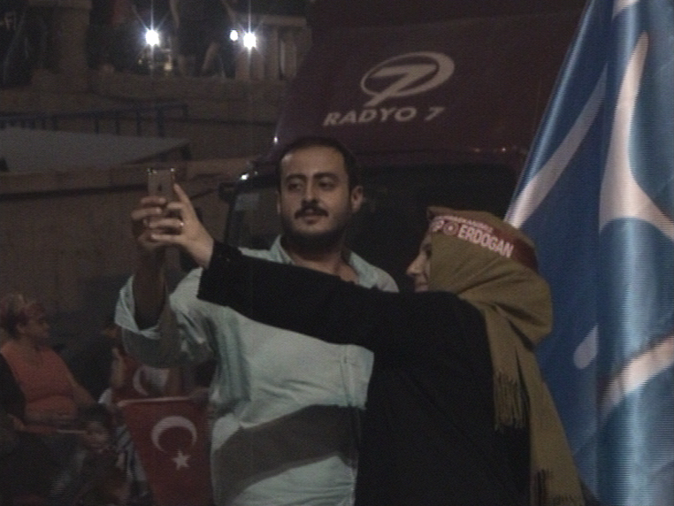
miniDV video, 13'00"
Flood is both an attempt to abstract the witness and embody the recording device. The video was shot on a miniDV cassette, as long takes that were left mostly intact in the final edit. I prefer not to contextualize the video further than what the particular viewer can deduce from it. Though, it is undeniably set in public space, while a public event of a certain size and political tone is taking place.
The work has been previously exhibited as a dual sided video projection in a dark space, with sound. What can be heard throughout the video is mostly in Turkish, and it is not mediated in another language by subtitles.